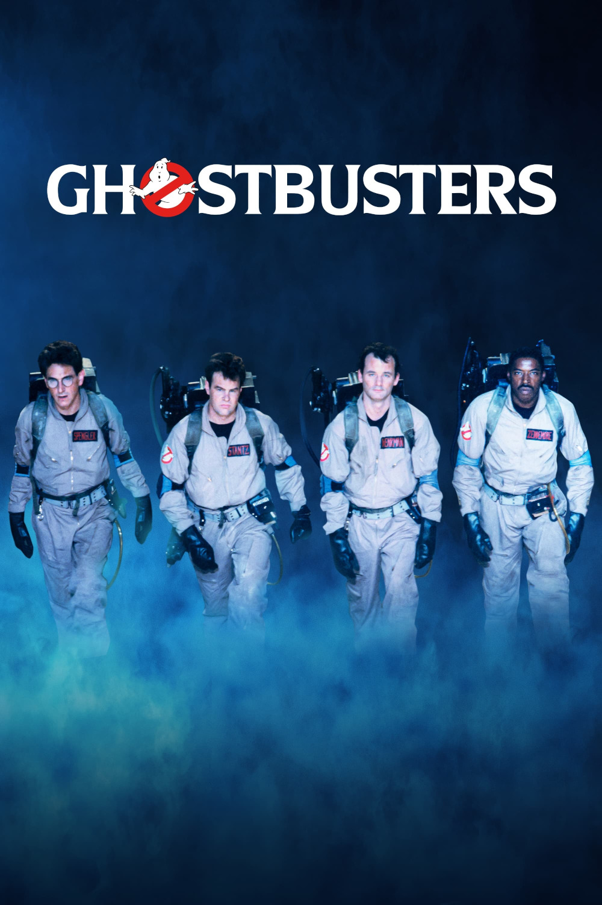

Мировая премьера: 8 июня 1984
Слоган: Кто-то борется с тараканами и насекомыми. Они очищают город от привидений.
Сюжет: Когда эксцентричные учёные Питер Венкмен, Рэй Стэнц и Игон Спенглер теряют работу в университете, они решают организовать в Нью-Йорке компанию по борьбе с призраками, используя свои передовые научные разработки. Как только они открывают свои двери, их клиенткой становится очаровательная виолончелистка Дана Барретт, которая случайно открыла врата ада... прямо в её собственном жилом доме!
Режиссёр: Айвен Райтман
Серия: Охотники За Привидениями
В ролях: Билл Мюррей, Дэн Эйкройд, Сигурни Уивер
| Билл Мюррей | Доктор Питер Венкмен |
| Дэн Эйкройд | Доктор Рэй Стэнц |
| Сигурни Уивер | Дана Барретт |
| Харольд Рэмис | Доктор Игон Спенглер |
| Рик Моранис | Луис Тулли |
| Уильям Этертон | Уолтер Пек |
| Энни Поттс | Джанин Мелниц |
| Эрни Хадсон | Уинстон Зеддмор |
| Дэвид Маргулис | Мэр |
Бюджет: $ 32 млн.
Кассовые сборы в США: $ 244 млн.
Кассовые сборы в мире: $ 297 млн.
Продолжительность: 1 ч. 41 мин.
Рейтинг: 7.8